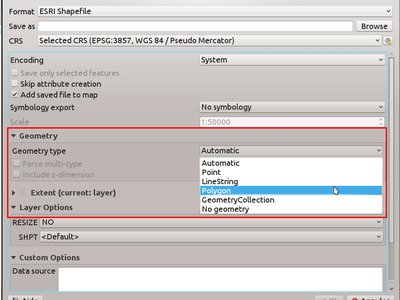
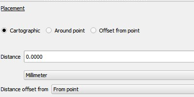
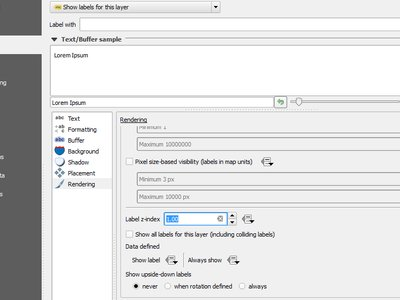
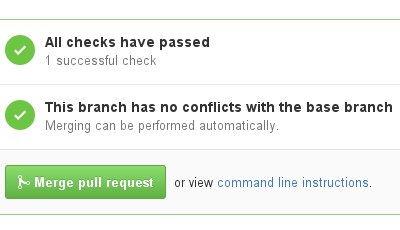
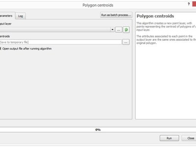
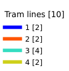
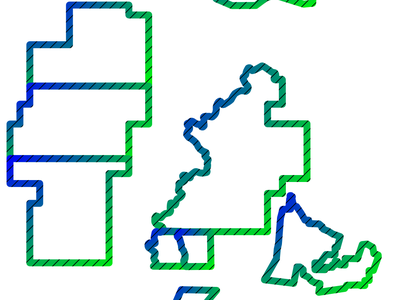

Alterações no QGIS 2.14¶

Este é o registro de alterações para a próxima versão do QGIS - versão 2.14 ‘Essen’. Essen foi a cidade anfitriã para os nossos encontros de desenvolvedores em outubro de 2012 e 2014.
Lançamento de longa duração
Esta é uma versão especial, uma vez que é designado “LTR” (Long Term Release). lançamentos LTR são apoiados com correções de bugs para uso ao longo de um ano, e estará em congelamento permanente de desenvolvimento (isto é, novos recursos não serão adicionados, apenas correções de bugs e atualizações triviais). Note que estamos em conversações para estender o prazo de liberação LTR para dois anos, mas por razões técnicas não vamos fazer isso até a versão do QGIS 3.2.
O objetivo da LTR é fornecer uma plataforma estável e menos frequentemente alterada para empresas e organizações que não querem lidar com atualização das habilidades do usuário, materiais de treinamento, etc. mais de uma vez por ano. O sucesso da LTR é muito baixo para vocês, nossos queridos usuários - precisamos do seu apoio para ajudar nas correções de bugs e financiamento, certificando-se em seus contratos de suporte com provedores de suporte para especificar que quaisquer correções de erros feitas em seu nome são aplicadas ao ramo LTR bem como o nosso ramo de desenvolvimento normal.
Se uma LTR for importante para você, considere também dar suporte diretamente ao projeto QGIS ou incentive seu provedor comercial a usar o LTR como base para sua solução corporativa, de modo que todos possam se beneficiar de uma plataforma estável que está sendo aprimorada e aprimorada continuamente. Observe que, para usuários e organizações que gostam de viver na fronteira, nossos lançamentos regulares de quatro meses continuarão sem interrupção.
Novas funcionalidades no QGIS 2.14 ‘Essen’
Se você não estiver atualizado a partir do QGIS 2.8 (a versão LTR anterior) você vai encontrar um grande número de novos recursos nesta versão. Nós encorajamos você a perseguir para os registros de alterações LTR intermediários que são 2.10 e 2.12 lançamentos como este QGIS 2.14 incluem todas as funcionalidades publicadas nesses lançamentos também. Note que o QGIS 2,14 entra pela primeira vez nos repositórios de pacotes regulares e não vai substituir imediatamente o QGIS 2.8 nos repositórios de pacotes LTR. Isso vai acontecer quando a versão 2,16 for liberada.
Sempre que novos recursos são adicionados ao software se introduzem a possibilidade de novos bugs - se você encontrar quaisquer problemas com esta versão, envie um ticket para o Rastreador de Bugs do QGIS.
Agradecimentos
We would like to thank the developers, documenters, testers and all the many folks out there who volunteer their time and effort (or fund people to do so). From the QGIS community we hope you enjoy this release! If you wish to donate time, money or otherwise get involved in making QGIS more awesome, please wander along to qgis.org and lend a hand!
QGIS is supported by donors and sponsors. A current list of donors who have made financial contributions large and small to the project can be seen on our donors list. If you would like to become an official project sponsor, please visit our sponsorship page for details. Sponsoring QGIS helps us to fund our six-monthly developer meetings, maintain project infrastructure and fund bug fixing efforts. A complete list of current sponsors is provided below - our very great thank you to all of our sponsors!
O QGIS é software livre e você está sob nenhuma obrigação de pagar nada para usá-lo - na verdade, queremos incentivar as pessoas para usá-lo, independentemente da sua situação financeira ou social - acreditamos que as pessoas capacitadas com ferramentas de tomada de decisão espaciais resultarão em uma sociedade melhor para toda a humanidade. Se você é capaz de apoiar o QGIS, você pode 
- Patrocinadores QGIS atuais
- Geral
- Funcionalidade: Mudou o comportamento da função strpos
- Funcionalidade: Zoom para a feição com clique com o botão direito na tabela de atributos
- Funcionalidade: melhorias de velocidade e memória
- Funcionalidade: Mais variáveis de expressão
- Funcionalidade: Melhor controle sobre a colocação de elementos do mapa
- Funcionalidade: Programa pago de correção de bugs
- Funcionalidade: calculadora de campo pode ser usada para atualizar geometria da feição
- Funcionalidade: Novas funções de expressão no QGIS 2.14
- Ferramentas de análise
- Navegador
- Provedores de dados
- Funcionalidade: capacidades de cache WMS
- Funcionalidade: apoio a geometria curva expandida
- Funcionalidade: Melhor manipulação de campos de hora e data e hora
- Funcionalidade: suporte Z/M no provedor de texto delimitado
- Funcionalidade: grupos de transação para edição de postgres
- Funcionalidade: provedor postgres de autenticação PKI
- Funcionalidade: Camadas virtuais
- Funcionalidade: Mais extensões de arquivo para osprovedores GDAL e OGR
- Funcionalidade: Use ST _RemoveRepeatedPoints de simplificação do lado do servidor com PostGIS 2.2 (ou mais recente)
- O gerenciamento de dados
- Funcionalidade: A remoção do plug-in SPIT
- Funcionalidade: exportação DXF: opção de usar o título em vez do nome como nome da camada DXF na aplicação e servidor
- Funcionalidade: Tipos de geometrias podem ser substituídos na janela vetoriral Salvar como
- Funcionalidade: Associações vetoriais agora são guardadas dentro da camada de definição-em arquivos QLR
- Funcionalidade: Widget de recursos externos
- Funcionalidade: edição de relação N:M
- Digitalização
- Rotulagem
- Funcionalidade: o modo de colocação “Cartográfica” em rótulos de ponto
- Funcionalidade: Aplicando rótulo por distância de limites do símbolo
- Funcionalidade: controle sobre a ordem de renderização rótulo
- Funcionalidade: símbolo real agora é considerado como um obstáculo para os rótulos de feições de ponto
- Legenda da camada
- Compositor de mapas
- Complementos
- Processamento
- Funcionalidade: Novos algorítimos no QGIS 2.14
- Funcionalidade: testes de unidade Q/A
- Funcionalidade: Melhoria da caixa de ferramentas
- Funcionalidade: processos de lote podem ser salvos e mais tarde recuperados a partir da interface de processamento em lote
- Funcionalidade: janelas de algoritmo mais informativas
- Funcionalidade: módulos GRASS7 v.net
- Programabilidade
- Funcionalidade: editor de função de expressão remodelado
- Funcionalidade: Armazenamentno de código python de inicialização para o projeto
- Funcionalidade: Novas opções de filtragem e ordenação para solicitação QgsFeature
- Funcionalidade: formulário de opções de personalizadas de feições do código Python
- Funcionalidade: Novas classes PyQGIS no QGIS 2,14
- Novas classes do núcleo
- Novas classes da GUI
- Servidor QGIS
- Funcionalidade: Solicitações de parâmetros STARTINDEX em WFS GetFeature
- Funcionalidade: showFeatureCount em GetLegendGraphic
- Funcionalidade: Opção para evitar artefatos nas bordas de mosaicos
- Funcionalidade: verificador de configuração nas propriedades do projeto
- Funcionalidade: Capacidades WMS INSPIRE
- Funcionalidade: Adicionar nome curto para camadas, grupos e projeto
- Simbologia
- Funcionaldiade: assistente de tamanho de largura variável de linha
- Funcionalidade: Suporte de transparência em parâmetros de cor SVG
- Funcionalidade: a duplicação fácil símbolos de camadas
- Funcionalidade: Rendererisador 2.5D
- Funcionalidade: Permitir definição de ordem de renderização para feições
- Funcionalidade: gerador de geometrias de símbolos
- Exemplos
- Interface do usuário
- Funcionalidade: tabela de atributos podem ser atualizadas
- Funcionalidade: Renderizador diretamente definido e símbolo de classe de cores do menu de contexto na legenda
- Funcionalidade: Editar símbolos da legenda diretamente na árvore de camadas
- Funcionalidade: Mostrar/ocultar todos os itens de legenda através do menu de contexto
Patrocinadores QGIS atuais¶
  Office of Public Works, Irlanda, Ireland (12.2014-12.2016) Office of Public Works, Irlanda, Ireland (12.2014-12.2016) |
 GAIA mbH, Alemanha (11.2015-11.2016) GAIA mbH, Alemanha (11.2015-11.2016) |
 Sourcepole AG, Suíça (10.2014-10.2016) Sourcepole AG, Suíça (10.2014-10.2016) |
 AGH University of Science and Technology, Polônia (06.2015-06.2016) AGH University of Science and Technology, Polônia (06.2015-06.2016) |
 State of Vorarlberg, Austria (03.2013-05.2016)
State of Vorarlberg, Austria (03.2013-05.2016) |
Asociación Geoinnova, Espanha (03.2016-03-2017) |
Gis3W, Itália (01.2014-01.2017) |
GKG Kassel,(Dr.-Ing. Claas Leiner), Alemanha (03.2014-03.2017) |
CawdorForestry Resource Management, Escórcia (02.2016-02.2017) |
ChameleonJohn, EUA (02.2016-02.2017) |
2D3D.GIS, França (12.2015-12.2016) |
Dr. Kerth + Lampe Geo-Infometric GmbH, Alemanha (12.2015-12.2016) |
MappingGIS, Espanha (11.2015-11.2016) |
HostingFacts.com, Estônia (12.2015-12.2016) |
Urbsol, Australia (11.2014-11.2016) |
Lutra Consulting, Reino Unido (10.2015-10.2016) |
WhereGroup GmbH & Co. KG, Alemanha (08.2015-08.2016) |
Nicholas Pearson Associates, Reino Unido (07.2015-07.2016) |
QGIS Polska, Polônia (07.2015-07.2016) |
|
www.terrelogiche.com, Itália (06.2015-06.2016) |
www.geosynergy.com.au, Australia (05.2012-05.2013+06.2015-06-2016) |
Gaia3D, Inc., Coréia do Sul (05.2015-05.2016) |
Royal Borough of Windsor and Maidenhead, Reino Unido (04.2015-04.2016) |
Chartwell Consultants Ltd., Canadá (03.2015-03.2016) |
Trage Wegen vzw, Bélgica (03.2015-03.2016) |
GFI - Gesellschaft für Informationstechnologie mbH, Alemanha (03.2015-03.2016) |
GIS-Support, Polônia (02.2015-02.2016) |
ADLARES GmbH, Alemanha (01.2015-01.2016) |
www.molitec.it, Itália (01.2014-01.2016) |
www.argusoft.de, Alemanha (06.2012-06.2013 + 12.2013-12.2015) |
Customer Analytics, EUA (12.2014-12.2015) |


Geral¶
Funcionalidade: Mudou o comportamento da função strpos¶
O comportamento da função strpos foi alterada, de modo que nenhum processo agora resulta em um valor “0” e um valor diferente de zero significa um início na posição do caractere especificado. Em versões mais antigas do QGIS, um valor “-1” significaria outros valores de retorno e representava a posição do caractere - 1.
Arquivos de projeto de versões anteriores do QGIS terão de ser atualizados para refletir essa mudança.

Esta funcionalidade foi desenvolvida por Jürgen Fischer
Funcionalidade: Zoom para a feição com clique com o botão direito na tabela de atributos¶
Agora você pode aumentar o zoom para uma feição de dentro de tabela de atributos (sem ter que selecioná-la primeiro) clicando com o botão direito e selecionando zoom para a feição.

Funcionalidade: melhorias de velocidade e memória¶
- Salvar um conjunto de feições selecionadas de uma camada grande é agora muito mais rápido
- Atualizar feições selecionadas usando a calculadora campo é mais rápido
- Zoom mais rápido para feições selecionadas em camadas grandes
- Muito mais rápido com a expressão de função
get_feature(especialmente quando uma coluna indexada na camada referenciada é usada) Selecionar por Atributoe `` Extrair por algoritmo de processamento de Atributo`` são ordens de grandeza mais rápidas, e podem tirar vantagem dos índices de bancos de dados criados com um atributo- O algoritmo de processamento
PointsInPolygonestá muito mais rápido - Filtrando as categorias em um renderizador categorizado (por exemplo, mostrando apenas algumas categorias e desmarcando outras) é muito mais rápido, como agora apenas as feições correspondentes são obtidas a partir do provedor de dados
- Redução significativa na memória necessário para abertura de grandes camadas vetoriais
Funcionalidade: Mais variáveis de expressão¶
Durante a renderização, novas variáveis estarão disponíveis:
@geometry_part_count: A contagem de parte da geometria está atualmente disponível (interessante para feições multi-parte)@geometry_part_num: Índice 1-baseado da parte da geometria está atualmente disponível
Estes são úteis para aplicar estilos diferentes para diferentes partes do feições de várias partes:
@map_extent_width: A largura do mapa atualmente processado em unidades do mapa@map_extent_height: A altura do mapa atualmente processado em unidades do mapa@map_extent_center: O ponto central do mapa atualmente processado em unidades do mapa
Também foram acrescentadas variáveis relativas ao ambiente do sistema operacional:
@qgis_os_name: por exemplo, ‘Linux’, ‘Windows’ ou ‘OSX’@qgis_platform: por exemplo, ‘Ambiente de Trabalho’ ou ‘Servidor’@user_account_name: nome da conta do sistema operacional do usuário atual@user_full_name: nome do usuário atual da conta de sistema operacional (se disponível)

Este recurso foi financiada por Andreas Neumann (o sistema operacional e as variáveis relacionadas ao usuário)
Este recurso foi desenvolvido por Nyall Dawson, Matthias Kuhn
Funcionalidade: Melhor controle sobre a colocação de elementos do mapa¶
O QGIS 2.14 ganhou um melhor controle sobre a colocação de setas de norte, barras de escala e avisos de direitos autorais, visite a página de tela do mapa. Agora você pode definir precisamente a posição desses elementos usando uma variedade de unidades (incluindo milímetros, pixels e por cento).

Funcionalidade: Programa pago de correção de bugs¶
Antes de cada lançamento, temos um programa de correção de bugs pago onde financiar desenvolvedores para limpar o máximo de erros possível. Decidimos começar incluindo um relatório de volta ao programa de correção de bugs pagos como parte do nosso relatório de registro de alterações. Note que esta lista é não exaustiva.
- Sandro Santilli: Postgis Connection freeze if you press “Set filter” during loading of data
- Sandro Santilli: db_manager is unable to load rasters from connections with no dbname specified
- Sandro Santilli: Plugin layers do not work correctly with rotation
- Sandro Santilli: Crash in QgsGeomColumnTypeThread stopping connection scan #14140 #13806
- Sandro Santilli: Crash after bulk change of attribute value in shapefile
- Sandro Santilli: KMZ causes QGIS application crash (Mac)
- Sandro Santilli: QGIS 2.8.1 crash opening FileGDB (openGDB-Driver)
- Sandro Santilli: QGIS crashes when removing vertex of a multipart geometry
- Sandro Santilli: test -V -R qgis_analyzertest segfaults
- Sandro Santilli: output/bin/qgis_diagramtest segfaults
- Sandro Santilli: Overflow on primary key with negative values; crashes QGIS when editing #13958 #14262
- Sandro Santilli: PyQgsPostgresProvider test hangs in absence of test database
- Sandro Santilli: TestVectorLayerJoinBuffer hangs if database is not available
- Nyall Dawson: BLOCKER: Crash when opening layer properties dialog for geometryless vector layer
- Nyall Dawson: Broken server side filtering for OGR, Oracle and Spatialite layers
- Nyall Dawson: BLOCKER: Bad polygon digitizing in master
- Nyall Dawson: BLOCKER: Heatmap with expression triggers segfault
- Nyall Dawson: BLOCKER: unchecking one sub-layer of a categorized symbology leads to no features being drawn
- Nyall Dawson: HIGH: A Multiband image(e.g. landsat5,7,8) cannot be displayed in windows8
- Nyall Dawson: BLOCKER: CurvePolygons not drawn
- Nyall Dawson: BLOCKER: “Merge Attributes” tool doesn’t change values when they are typed
- Nyall Dawson: HIGH: Filter legend by content is broken when renderer contains duplicate symbols
- Nyall Dawson: Fix issues with conversion of renderers to rule based renderer resulting in broken renderer
- Nyall Dawson: Fix categorised renderer does not store changes to the source symbol
- Nyall Dawson: HIGH: Avoid crash with raster calculator and huge raster inputs
- Nyall Dawson: HIGH: @value variable of simple symbol fill color wrongly gets modified in data-defined expression
- Nyall Dawson: HIGH: Editing Composer legend while filtered does not work
- Nyall Dawson: NORMAL: Deleting nodes - inconsistent behaviour
- Nyall Dawson: Fix handling of time value in attributes
- Nyall Dawson: Dialog tab order fixes
- Nyall Dawson: BLOCKER: crash when adding multiple files from browser panel
- Nyall Dawson: HIGH: Merge selected features tool corrupts data when columns are defined as “hidden”
- Nyall Dawson: Correctly handle LongLong fields in merge attribute dialog
- Nyall Dawson: Fix misleading display of calculation details in measure tool dialog (was misleading and inaccurate for many CRS/unit combinations)
- Nyall Dawson: NORMAL: max value for option “increase size of small diagrams” not sufficient
- Nyall Dawson: BLOCKER: Area not calculated correctly with OTF on
- Nyall Dawson: NORMAL: Incoherent lat/lon coordinates in a projected coordinate system project
- Nyall Dawson: NORMAL: make the field calculator compute areas and lengths in units other than map units #12939 #2402 #4857
- Nyall Dawson: NORMAL: different built-in tools calculate inconsistent polygon areas
- Nyall Dawson: NORMAL: In virtual fields $area function computes always values using “None/planimetric” ellipsoid
- Martin Dobias: raster layer drawn as garbage
- Martin Dobias: HIGH: Multi-threaded rendering and OTF reprojection issues #11441 #11746
- Martin Dobias: BLOCKER: Regression in “save as” dialog for shapefiles
- Martin Dobias: Slow loading of attribute table in debug mode
- Martin Dobias: BLOCKER: Crash when changing renderer type
- Martin Dobias: HIGH: Custom python renderer issues #1
- Martin Dobias: HIGH: Custom python renderer issues #2
- Martin Dobias: 2.5d renderer fixes
- Martin Dobias: HIGH: Long freeze when initializing snapping
- Martin Dobias: NORMAL: Loading of data-defined from xml
- Martin Dobias: Fix DB manager to work with SpatiaLite < 4.2
- Martin Dobias: NORMAL: Crash while rendering in debug mode
- Martin Dobias: BLOCKER: Fix selection / identification in spatialite views #14232 #14233
- Martin Dobias: BLOCKER: Fix drag&drop of spatialite tables
- Jürgen Fischer:Zoom to layer works incorrectly while layer editing
- Jürgen Fischer:Help viewer process running in the background with no help viewer (or even QGIS) open
- Jürgen Fischer:Spatialindex include path missing in some components
- Jürgen Fischer:compile fails attempting to generate qgsversion.h
- Jürgen Fischer:Edit widget configuration is stored twice
- Jürgen Fischer:Extra space in “IS NOT” operator makes the expression return wrong selection
- Jürgen Fischer:QGIS greadily allocates memory and crashes when editing moderately large shapefiles with the node tool
- Jürgen Fischer:French reprojection use ntf_r93.gsb (IGNF:LAMBE etc ..)
- Jürgen Fischer:Digitizing: “Reuse last entered attribute values” should not overwrite primary key column
- Jürgen Fischer:Issues in Case expression description
- Jürgen Fischer:shapefile vector writer: datetime field saved as date resulting in data loss of time
- Jürgen Fischer:Add help for some variable functions
- Jürgen Fischer:Virtual layers not working in Processing
- Jürgen Fischer:layer definition file load error
- Jürgen Fischer:QgsGeometry::fromWkb fails if WKB is different endian representation
- Jürgen Fischer:Debian build failure.
- Jürgen Fischer:PyQgsPostgresProvider test hangs in absence of test database
- Jürgen Fischer:wkb access out of bounds
- Jürgen Fischer:QGIS under Windows netCDF import reverses Y axis, Linux doesn’t OSGeo4W #483
- Jürgen Fischer:OSGEO4W: Running offline install crashes installer
- Jürgen Fischer:OSGEO4W: Dependencies are not tracking on Windows Server 2003 x64
- Jürgen Fischer:OSGEO4W: installation from local package don’t check the dependencies
- Jürgen Fischer:OSGEO4W: Setup starts downloading and installing packages before showing you a list to choose from
- Jürgen Fischer:OSGEO4W: Using -a for Advanced selects two options (command line install)
- Jürgen Fischer:OSGEO4W: Infinite license download during quite installation of szip
- Jürgen Fischer:Oracle provider deadlock
- Jürgen Fischer:fix saga path setting
Funcionalidade: calculadora de campo pode ser usada para atualizar geometria da feição¶
A calculadora de campo agora pode ser usada para atualizar geometrias de recursos usando o resultado de uma expressão geométrica. Este é um atalho prático para fazer operações como aplicar um buffer a um grupo de recursos selecionados e, junto com todas as funções de geometria adicionadas recentemente em 2.14, é uma maneira muito prática de manipular suas geometrias!

Esta funcionalidade foi desenvolvida por Nyall Dawson
Funcionalidade: Novas funções de expressão no QGIS 2.14¶
Lotes de novas funções de expressão foram adicionados para a versão 2.14:
relatar: executa uma relação de geometria DE-9IM retornando a representação DE-9IM do relacionamento entre duas geometrias ou testando se o relacionamento DE-9IM corresponde a um padrão especificado.- A função
make_pointagora aceita valores Z e M opcionais, e uma nova funçãomake_point_mfoi adicionada para a criação de geometrias PointM. - As funções
mandzservem para recuperar os valores M e Z a partir de uma geometria de ponto - novas funções
make_lineemake_polygonpara a criação de geometrias linhas e polígonos a partir de um conjunto de pontos reverse, para reverter cadeias de linhas- função
eval, que pode avaliar uma string como se fosse uma expressão sua própria - função
translate, para traduzir geometrias com um deslocamento por x/y - funções
darkerelighter, que levam um argumento de cor e tornam mais claras ou escuras por uma quantidade especificada radiansedegrees: para converter os ângulos entre radianos e grauspoint_on_surface: retorna um ponto na superfície de uma geometriaexterior_ring: retorna o anel exterior para uma geometria de polígonois_closed: retorna true se uma cadeia de linhas é fechada- novas funções de geometria acessórias:
geometry_n(retorna uma geometria específica de dentro de uma coleção), `` interior_ring_n`` (retorna um anel interior de dentro de um polígono) num_geometries: retorna o número de geometrias dentro de uma coleçãonum_rings: retorna o número de toques em um objeto de geometria de polígononum_interior_rings: retorna o número de anéis interiores em um polígononodes_to_points, para a conversão de cada nó em uma geometria para uma geometria multipontosegments_to_lines, para a conversão de todos os segmentos de uma geometria para uma geometria de várias linhasclosest_point: retorna o ponto mais próximo de uma geometria para uma segunda geometriashortest_line: retorna a menor linha possível de união de duas geometrias
nodes_to_points e segments_to_lines são destinados ao uso com o gerador simbologia de geometria, por exemplo, para permitir o uso de valores de m e z para nós/linhas com dados de simbologia definida.
Outras melhorias:
- geometrias e recursos agora podem ser usados em funções condicionais. Por exemplo, isso permite expressões como
caso quando $ geometria então ... mais ...casoe `` caso quando get_feature (…) então … outro …``

Ferramentas de análise¶
Funcionalidade: Mais ferramentas estatísticas disponíveis para mesclar atributos¶
Ao usar a ferramenta de atributo de mesclagem de valores de mesclagem ou de mesclagem, há estatísticas de resumo adicionais disponíveis que podem ser usadas para definir os valores de atributo resultantes. Estes incluem Q1, Q3, intervalos interquartil, valores majoritários e minoritários e número de valores únicos, entre outros.

Esta funcionalidade foi desenvolvida por Nyall Dawson
Funcionalidade: valores z/m são mostrados ao usar a ferramenta identificar¶
A ferramenta de identificação agora é capaz de mostrar qualquer valor z ou m presente nas feições identificadas. Se a feição é uma linha ou polígono, a ferramenta mostrará o número de vértices e x/y/z/m para o vértice mais próximo do ponto identificado. A ferramenta identificar também mostra o número de partes e o número de partes para coleções.

Esta funcionalidade foi desenvolvida por Nyall Dawson
Funcionalidade: movimentação das unidades de distância e área e formatos de coordenadas unificados¶
No QGIS 2,14 a manipulação de várias opções sobre unidades de distância, unidades de área e de apresentação de coordenadas foram unificadas, simplificadas, e mudou-se para as propriedades do projeto. Esta mudança traz inúmeros benefícios, incluindo:
- O formato de coordenadas especificado nas propriedades do projeto é constantemente usado sempre que uma coordenada é exibida para o usuário, incluindo os resultados da ferramenta identificar e a exibição na barra de status.
- O cenário para unidades de distância e de área nas propriedades do projeto é respeitada por todos os cálculos de distância e área, incluindo a ferramenta de medida, identificar resultados, e o uso das funções
$area,$lengthe$perimeter. - Unidades de área adicionais foram adicionadas, incluindo metros quadrados, acres, hectares e muito mais.
- Unidades angulares adicionais foram adicionadas à ferramenta de medição do ângulo, incluindo rotações, minutos de arco e segundos de arco.
- É agora possível mostrar as coordenadas de latitude e longitude na barra de status mesmo quando se utiliza um SRC projetado.

Este recurso foi financiado pelo programa QGIS de patrocínio de correção de bugs
Esta funcionalidade foi desenvolvida por Nyall Dawson
Navegador¶
Funcionalidade: Melhorias no navegador¶
O Navegador QGIS é um painel de sistema de arquivos, OGC Web Services e conexão com banco de dados que permite facilmente arrastar e soltar qualquer camada a partir das fontes acima mencionadas em seu mapa na tela (ou na janela do Gerenciador do banco de dados). Duas novas melhorias úteis foram adicionadas para esta versão:
- Os caminhos podem ser seletivamente escondidos no painel do browser - isto é útil para reduzir sua lista de fontes e se concentrar apenas em diretórios relevantes.
- Projetos carregam diretamente a partir do navegador - agora você pode arrastar e soltar todo um projeto para o mapa na tela do QGIS e ele será carregado.

Este recurso foi desenvolvido por Nathan Woodrow
Provedores de dados¶
Funcionalidade: capacidades de cache WMS¶
O QGIS agora dispõe de cache WMS, o modo GetCapabilities que em tempos de resposta posterior utilização será mais rápido quando se usa esse serviço. Por padrão, o período de cache é de 24 horas, mas você pode ajustar isso no guia Rede da caixa de Configurações do QGIS.

Esta funcionalidade foi desenvolvida por Jürgen Fischer
Funcionalidade: apoio a geometria curva expandida¶
O provedor de texto delimitado agora suporta strings WKT curvas, e o provedor de memória (por exemplo, camadas “scratch temporário”) ganhou total apoio para geometrias curvas. Além disso, se o QGIS foi criado usando versões GDAL 2.0, então o QGIS irá apoiar plenamente geometrias curvas em tipos de arquivos suportados (por exemplo, arquivos GML).

Esta funcionalidade foi desenvolvida por Nyall Dawson
Funcionalidade: Melhor manipulação de campos de hora e data e hora¶
O QGIS 2,14 melhorou a manipulação de tempo e de campo de data e hora, incluindo:
- campos timestamp PostgreSQL são tratados corretamente
- O mecanismo de expressão agora tem suporte completo para campos de tempo
- O construtor de expressão agora mostra os resultados do cálculo de pré-visualização para a data, hora, e cálculos de intervalo
- Os campos de hora são totalmente suportados por camadas de arquivos vetoriais (dependendo do formato do ficheiro), PostgreSQL, MS SQL Server e camadas temporárias de scratch
- Salvando camadas para arquivos vetoriais serão preservados os campos de tempo se forem suportados pelo formato de camada vetorial (por exemplo, arquivos MapInfo .tab )

Este recurso foi desenvolvido por Jürgen Fischer, Nyall Dawson
Funcionalidade: suporte Z/M no provedor de texto delimitado¶
O provedor de texto delimitado ganhou apoio para strings WKT contendo coordenadas Z e M . Por exemplo, você pode expressar um ponto com z e medir elementos como este: POINT ZM (1 1 5 60).

Esta funcionalidade foi desenvolvida por Nyall Dawson
Funcionalidade: grupos de transação para edição de postgres¶
Uma nova opção foi introduzida para permitir a edição transacional.
Quando esta opção está habilitada
- Todas as camadas do mesmo banco de dados são colocadas em um grupo de transações
- Quando a primeira camada de um grupo é colocada em modo de edição, todas as outras também são colocadas em modo de edição automaticamente
- Quando uma camada é editada, as alterações são enviadas para o banco de dados imediatamente, permitindo que os gatilhos e restrições a serem aplicadas imediatamente
- Quando uma camada em um grupo de transações é confirmada, todas as camadas são confirmadas (transação de banco de dados)
- Quando uma camada em um grupo de transações é revertida, todas as camadas são revertidas (transação de banco de dados)
Este recurso é atualmente Experimental. Se você encontrar quaisquer problemas, por favor relatá-los.
Isso só é implementado para bancos de dados PostgreSQL no momento.

Este recurso foi consolidado por SIGE
Este recurso foi desenvolvido por Matthias Kuhn, OPENGIS.ch, baseado no trabalho de Sourcepole
Funcionalidade: provedor postgres de autenticação PKI¶
A capacidade de usar o gerenciador de autenticação do QGIS introduzido na versão 2,12 foi estendida para o provedor PostGIS. Isso permite a conexão com Postgres usando autenticação básica ou PKI, com as credenciais armazenadas na configuração do QGIS. A nova autenticação do fornecedor de Postgres também pode ser usada no gestor de DB.

Esta funcionalidade foi financiada por Boundless Spatial
Este recurso foi desenvolvido por Luigi Pirelli
Funcionalidade: Camadas virtuais¶
consultas SQL dinâmicas agora podem ser usadas em qualquer tipo de camadas vetoriais que o QGIS é capaz de carregar, mesmo que o formato de camada em si não tem suporte para consultas SQL!
Um novo tipo de camada vetorial chamado “camada virtual” agora está disponível para o efeito. Estas permitem-lhe criar uma camada virtual através da definição de uma consulta (incluindo suporte para agregados e junta-se) de outras camadas no seu projeto. A camada resultante será uma exibição ao vivo, dinâmica do resultado da consulta, portanto, quaisquer alterações nas camadas de origem será automaticamente imediatamente refletida na camada virtual!
O dialeto SQL suportado é SQLite com funções SpatiaLite. As funções QGIS de expressão também podem ser utilizadas em procedimentos. Qualquer tipo de camada vetoriais pode ser acessado na consulta, incluindo várias camadas de diferentes provedores de dados.
O suporte para camadas virtuais também foi adicionado ao Gestor de BD, bem como a caixa de ferramentas de processamento onde uma nova ferramenta ‘Execute SQL’ está disponível.

Esta funcionalidade foi financiada por MEDDE (French Ministry of Sustainable Development)
Esta funcionalidade foi desenvolvida por Hugo Mercier / Oslandia
Funcionalidade: Mais extensões de arquivo para osprovedores GDAL e OGR¶
Para arquivos vetoriais e raster, o QGIS conta com a biblioteca GDAL / OGR. Isso significa que praticamente qualquer formato de arquivo que possa ser aberto pelo GDAL ou OGR pode ser aberto diretamente no QGIS. Até agora, algumas extensões de arquivo não foram adicionadas no seletor de arquivos GDAL ou OGR, resultando em usuários que acreditavam que o QGIS não podia abrir ou manipular esses formatos de arquivo. Para minimizar esse problema, algumas novas extensões foram adicionadas aos filtros do seletor de arquivos GDAL e OGR:
Para arquivos vetoriais:
- .thf para o formato EDIGEO de cadastro Francês
- .ods para formato de planilhas OpenDocument LibreOffice
- .xls para o formato Microsoft Excel
- .xlsx para o formato Microsoft Excel OpenXML
- .xml para o formato NAS - Alkis
- .map para o formato WAsP
- .pic para o formato PCIDSK
- .gts e .gtm para o formato GPS TrackMaker
- .vfk para o formato VFK
- .osm e .pbf para o formato OpenStreetMap
- .sua para o formato SUA
- .txt para o formato OpenAir
- .xml para o formato de tabela Planetary Data Systems
- .htf para o formato de Transferência Hidrográfica
- .svg para o formato SVG
- .gen para ARCGEN
- .sxf para o formato de armazenamento e eXchange
- .pdf para o formato de vetor Geospatial PDF
- .sgy e .segy para o formato SEG-Y
- .seg, .seg1, .sp1, .ukog, .ukooa para o formato SEGD UKOOA
- .ovf para o formato de arquivo vetorial VRT
- .kmz para o formato KML compactado (KMZ)
- .db3, .s3db, .sqlite3, .db3, .s3db, .sqlite3 para o formato SQLite/SpatiaLite
- .sl3 para o formato SQLite Espaciais (FDO)
- CouchDB Espaciais (via URL)
Para arquivos raster:
- .ovr para o formato de arquivo vrt raster

Este recurso foi desenvolvido por Médéric Ribreux
Funcionalidade: Use ST _RemoveRepeatedPoints de simplificação do lado do servidor com PostGIS 2.2 (ou mais recente)¶
Quando se utiliza um exemplo de PostGIS 2.2, O Qgis agora usa a função ST _RemoveRepeatedPoints em vez da função ST _SnapToGrid ao processo de simplificação do lado do servidor, como descrito por Paul Ramsey.
Este método irá diminuir o número de vértices das geometrias que o QGIS precisa fazer o download a partir do servidor, o que aumentará a velocidade de renderização e salvar largura de banda entre o QGIS e o servidor PostgreSQL.

Esta funcionalidade foi desenvolvida por Michaël Douchin @kimaidou
O gerenciamento de dados¶
Funcionalidade: A remoção do plug-in SPIT¶
O plug-in “SPIT” já não é empacotado com o QGIS, como o plug-in foi sem manutenção e foi ultrapassado pelo DB Manager e os algoritmos de importação de banco de dados de processamento.

Este recurso foi desenvolvido por Nathan Woodrow
Funcionalidade: exportação DXF: opção de usar o título em vez do nome como nome da camada DXF na aplicação e servidor¶

Este recurso foi financiado por City of Uster
Esta funcionalidade foi desenvolvida por Jürgen Fischer
Funcionalidade: Tipos de geometrias podem ser substituídos na janela vetoriral Salvar como¶
Isso torna possível fazer coisas como salvar uma tabela geometryless com um tipo de geometria, de modo que as geometrias podem ser adicionadas manualmente para linhas. Anteriormente isso só era possível fazer noQGIS recorrendo a junção ou outras soluções.
Além disso, foram adicionadas opções para forçar o arquivo de saída para ser multi tipo, ou incluir uma dimensão z.

Esta funcionalidade foi desenvolvida por Nyall Dawson
Funcionalidade: Associações vetoriais agora são guardadas dentro da camada de definição-em arquivos QLR¶
Funcionalidade: Widget de recursos externos¶
Um novo widget de formulário já está disponível. Ele é chamado de “recurso externo” e permite um tratamento mais completo de atributos atribuídos a apresentar caminhos de armazenamento. Aqui está um resumo completo das características do widget:
- Você pode definir um filtro de extensão para forçar o armazenamento de formatos de arquivos fixos. Se um filtro estiver definido, o seletor de arquivos mostra apenas os nomes de arquivos que são relevantes para o filtro (ainda é possível selecionar qualquer arquivo usando caracteres ‘*’ no campo de pesquisa). A sintaxe do filtro é a mesma do Qt widgets QFileDialog::GetOpenFileName.
- Você pode definir um ** caminho padrão **. Cada vez que um usuário aciona o widget, um seletor de arquivos será aberto no caminho padrão (se definido). Se nenhum caminho padrão tiver sido definido, o seletor de arquivos usará o último caminho selecionado de um widget “Recurso externo”. Se o widget nunca tiver sido usado, o seletor de arquivos será padronizado para abrir no caminho do projeto.
- Você pode definir e definir o caminho relativo de armazenamento. O armazenamento de caminho relativo permitirá que você salve apenas a parte do caminho que está após o caminho padrão (se o caminho padrão estiver definido) ou o caminho do projeto atual. Isso é particularmente útil quando você deseja salvar caminhos longos em atributos de tamanho limitado (como atributos de texto para Shapefiles que são limitados a 254 caracteres) ou para criar arquivos de projeto e arquivo de dados autocontidos para distribuição.
- Outro novo recurso para fazer o widget mais fácil de usar é que caminhos de arquivos agora podem ser exibidos como hiperlinks. Ao clicar no link irá abrir diretamente o arquivo vinculado ao QGIS. Você pode configurar essa opção para exibir o caminho completo do arquivo, ou apenas seu nome de arquivo. O arquivo será aberto usando o manipulador padrão para esse formato de arquivo de seu sistema operacional.
- Você também pode usar uma URL em vez de um caminho de arquivo. O widget irá interpretá-lo como um URL e você será capaz de abrir a página web ligada diretamente no seu navegador web padrão.
- Você pode optar por caminhos de diretório de loja em vez de caminhos de arquivo.
- Há um visualizador de documentos integrado neste widget. Você pode usá-lo para exibir imagens ou páginas da web diretamente no QGIS. O seletor de arquivos para o visualizador integrado irá beneficiar de todas as opções acima mencionadas.
Para mais informações sobre as opções de configuração, você pode usar as dicas de ferramentas da caixa de configuração.
O principal objectivo deste novo widget é corrigir e melhorar os dois ‘nome de arquivo’ existentes e widgets de “fotos”, e substituí-los com um único widget unificado. No momento, você ainda pode usar os antigos widgets, mas eles vão ser obsoleto e removidos no QGIS 3.0. Recomendamos mudar seus projetos para usar o novo widget ‘Recursos Externos’ a partir de agora.
Este recurso foi desenvolvido por:
- Denis Rouzaud
- Matthias Kuhn at OPENGIS.ch
- Médéric Ribreux

Funcionalidade: edição de relação N:M¶
Isso adiciona a possibilidade de gerenciar dados em um banco de dados relacional normalizado em N: M (muitas para muitas) relações. No editor de relação, as ferramentas para adicionar, excluir, vincular e desvincular também trabalham na tabela de ligação, se a relação é visualizada como uma relação N:M.
A configuração é feita através da guia campos onde a relação em uma segunda relação pode ser escolhida (se há uma relação adequada em termos de uma segunda relação de ligação na tabela).
Limitações:
O QGIS não é um sistema de gerenciamento de banco de dados.
Ela é baseado em suposições sobre o sistema de banco de dados subjacente. Em particular: sugere uma edição
- espera uma medida `` ON DELETE CASCADE`` ou similar na segunda relação
- ele não cuida da configuração da chave primária ao adicionar recursos. Os usuários precisam ser instruídos para configurá-los manualmente ou - se for um valor derivado do banco de dados - as camadas precisam estar no modo de transação

Este recurso foi financiado por République et canton de Neuchâtel, Ville de Pully, Ville de Vevey
Este recurso foi desenvolvido por Matthias Kuhn
Digitalização¶
Funcionalidade: cor de banda da borracha configurável¶
Agora você pode definir a largura da borracha e a cor utilizada para a digitalização.

Funcionalidade: ferramenta de digitalização de Traço¶
A nova ferramenta de rastreamento de digitalização é uma ferramenta de digitalização avançada, que lhe permite digitalizar feições em uma camada por recursos de rastreamento em outra camada.
A ferramenta de rastreamento:
- usa algoritmo de menor caminho de Dijkstra para encontrar rotas rastreáveis
- pode traçar rotas de múltiplas feições distintas
- pode ser usado com ferramentas avançadas de digitalização (reformulação por exemplo)
- pode ser ativada e desativada pressionando T no teclado enquanto digitalização
- é fácil e rápida de usar
Você pode ler mais sobre este recurso aqui and with this tutorial.
Este recurso foi financiado por: The Royal Borough of Windsor and Maidenhead, Neath Port Talbot County Borough Council, Ujaval Gandhi, Surrey Heath Borough Council, Matias Arnold, Northumberland National Park Authority, Buccleuch Estates Limited, Countryscape

Este recurso foi desenvolvido por Lutra Consulting
Rotulagem¶
Funcionalidade: o modo de colocação “Cartográfica” em rótulos de ponto¶
Nesse modo de veiculação, os candidatos a marcadores de ponto são gerados seguindo as regras de posicionamento cartográfico ideais, por exemplo, as veiculações de rótulo são priorizadas na ordem:
- superior direito
- superior esquerdo
- inferior direito
- inferior esquerdo
- meio direito
- meio esquerdo
- superior, levemente à direita
- inferior, levemente à esquerda
(respeitando as orientações do Krygier e Wood (2011) e outras obras-primas cartográficas)
Prioridade de colocação também pode ser definida para uma feição individual usando uma lista definida de dados de posições priorizadas. Isso também permite que apenas determinados canais serem utilizados, assim, por exemplo, para as feições costeiras você poderia evitar que as etiquetas fossem colocadas sobre a terra.

Este recurso foi financiado por Andreas Neumann
Esta funcionalidade foi desenvolvida por Nyall Dawson
Funcionalidade: Aplicando rótulo por distância de limites do símbolo¶
Quando essa configuração está ativa, a distância do rótulo aplica-se a partir dos limites do símbolo rendida por um ponto, em vez de o próprio ponto. É especialmente útil quando o tamanho do símbolo não é fixo, por exemplo, se ele é definido por um tamanho definido de dados ou quando utilizar símbolos diferentes em um renderizador categorizados.
Note que esta definição só está disponível com o novo modo de colocação de rótulo de ponto cartográfico.
Este recurso foi financiado por Andreas Neumann
Esta funcionalidade foi desenvolvida por Nyall Dawson
Funcionalidade: controle sobre a ordem de renderização rótulo¶
Um novo controle para definir um rótulo de “z-index” foi adicionada à caixa de Propriedades de rotulagem. Este controle (que também aceita substituições definidas por dados de feições individuais) determina a ordem em que os rótulos são exibidos. camadas de rótulos com um z-index maior são prestados no topo de rótulos a partir de uma camada com menor índice z.
Além disso, a lógica foi ajustada de modo que se 2 rótulos têm correspondência z-índices, então:
- Se eles são da mesma camada, um rótulo mais pequeno irá sempre ser retirada acima de um rótulo maior
- se eles são de diferentes camadas, os rótulos serão desenhados na mesma ordem como as próprias camadas (ou seja, respeitando a ordem definida na legenda)
Os diagramas também podem ter o seu índice z ajustado (mas não de dados definidos) de modo que a ordem de rotulagem e diagramas pode ser controlada.
Note que este NÃO permitir que os rótulos sejam traçados abaixo as feições de outras camadas, ele só controla a ordem em que os rótulos são desenhados em cima de seu mapa.

Esta funcionalidade foi desenvolvida por Nyall Dawson
Funcionalidade: símbolo real agora é considerado como um obstáculo para os rótulos de feições de ponto¶
Anteriormente, apenas o recurso próprio de ponto era tratado como um obstáculo para os rótulos. Se um símbolo grande fosse utilizado para o ponto, em seguida, as etiquetas foram autorizadas a se sobrepor a este símbolo sem incorrer no custo de obstáculo.
Agora, o tamanho real e deslocamento do símbolo prestados são considerados quando detectar se um rótulo colide com uma feição de ponto. O resultado é que o QGIS agora evita rótulos sobre símbolos de pontos em mais circunstâncias.

Este recurso foi financiado por City of Uster
Esta funcionalidade foi desenvolvida por Nyall Dawson
Legenda da camada¶
Funcionalidade: Cole um estilo para várias camadas selecionadas ou todas as camadas em um grupo na legenda¶
Esse recurso adiciona a possibilidade de colar o estilo de uma camada para a camada ou grupo de camadas selecionadas.

Esta funcionalidade foi desenvolvida por Salvatore Larosa
Funcionalidade: Filtro de legenda por expressão¶
Agora é possível filtrar elementos da legenda por uma expressão. Ele foi projetado com a filtragem da simbologia ou categorização baseado em regras.
A filtragem de legenda está disponível na legenda do aplicativo principal, bem como para componentes de legenda do compositor do QGIS.

Este recurso foi financiado por Agence de l’Eau Adour-Garonne (Adour-Garonne Water Agency)
Esta funcionalidade foi desenvolvida por Hugo Mercier / Oslandia
Compositor de mapas¶
Funcionalidade: Novas opções para elementos de filtragem de legenda¶
Este apresenta duas novas opções para filtrar elementos de legenda.
O primeiro, filtrar por expressão, permite aos usuários definir uma expressão para filtragem que devem ser mostrados na legenda. Somente símbolos com uma feição de correspondência serão mostrados na legenda.
A segunda opção de filtro permite que uma legenda do compositor seja filtrada para incluir somente itens que estão contidos dentro do polígono do atlas atual.

Este recurso foi desenvolvido por Hugo Mercier (Oslandia)
Funcionalidade: caminhos adicionais para modelos do compositor¶
Agora você pode definir caminhos personalizados que devem ser usados para o QGIS encontrar modelos do compositor. Isso significa que você pode, por exemplo, colocar um monte de modelos em um compartilhamento de rede e dar a seus usuários acesso a essa pasta, além dos locais que existem em seu próprio sistema. Para gerenciar os caminhos de pesquisa de modelo de compositor, veja em `` Configurações-> Opções -> Compositor``

Este recurso foi desenvolvido por Nathan Woodrow
Funcionalidade: Seleção múltipla de composições no gerenciador¶
O Gerenciador do compositor ganhou suporte para o gerenciamento de várias composições, ao mesmo tempo. Agora você pode abrir ou excluir várias composições de uma só vez usando a tecla Ctrl e selecionando várias composições da lista.

Este recurso foi desenvolvido por Médéric Ribreux
Complementos¶
Funcionalidade: suporte do sistema de autenticação para o gerenciador de complementos¶
Suporte para o novo sistema de autenticação foi adicionado ao gerenciador de complementos. Isto permite aos usuários aplicar configurações de autenticação para ligações a repositórios de complementos, e administradores de sistema para criar o acesso autenticado a repositórios de plugins e/ou os pacotes de download de complementos.

Este recurso foi financiado por Boundless Spatial
Este recurso foi financiado por Larry Shaffer
Processamento¶
Funcionalidade: Novos algorítimos no QGIS 2.14¶
Geoalgorítimos QGIS¶
- Suave: para alisar camadas de linha ou polígono.
- Inverter direção de linha.
geoalgoritimos GDAL/OGR:¶
- gdal2tiles: constrói um diretório com mosaicos TMS, PMSL e telespectadores web simples.
- gdal_retile: mosaica um conjunto de mosaicos e/ou constrói níveis de pirâmide em mosaicos.
Funcionalidade: testes de unidade Q/A¶
Para garantir a estabilidade a longo prazo do módulo de processamento, foi introduzida uma nova estrutura de teste.
Processamento de geo-algoritmos são executados após cada mudança que atinge o código-fonte do QGIS e o resultado é comparado com um conjunto de dados de controle para garantir o comportamento correto. Isto dá um feedback imediato sobre possíveis regressões.
É possível - e desejado - que mais testes sejam adicionados. Você pode ler mais sobre como participar.

Este recurso foi financiado por The QGIS Project
Este recurso foi desenvolvido por Matthias Kuhn, OPENGIS.ch
Funcionalidade: Melhoria da caixa de ferramentas¶
A interface simplificada foi removida e um novo e mais amigável sistema de gerenciamento de provedores foi adicionado. A funcionalidade de pesquisa de algoritmo agora também pesquisa em provedores que não estão ativos e sugere ativá-los.

Este recurso foi financiado por Boundless Spatial
Este recurso foi desenvolvido por Víctor Olaya
Funcionalidade: processos de lote podem ser salvos e mais tarde recuperados a partir da interface de processamento em lote¶

Funcionalidade: janelas de algoritmo mais informativas¶
Uma breve descrição agora é mostrada junto com os parâmetros do algoritmo, tornando fácil de entender o propósito do algoritmo.
Além disso, processos em lote podem ser agora iniciados a partir da janela do algoritmo, usando o botão “Executar como processo de lote …”

Funcionalidade: módulos GRASS7 v.net¶
O QGIS 2.14 Processamento agora incorpora módulos GRASS v.net (apenas para GRASS7). Esses módulos são um conjunto de algoritmos que executam em camadas linha do gráfico de vetor (redes). Um gráfico é um conjunto de vértices (ou nós ou pontos) ligados entre si com um conjunto de arestas (ou arcos ou linhas). O conjunto de arestas é muitas vezes chamado de uma rede.
Graças ao v.net modules, você pode facilmente calcular o caminho mais curto entre um conjunto de nós na rede ou até mesmo calcular o` mapa isocrónico <https://en.wikipedia.org/wiki/Isochrone_map>`__ a partir de um conjunto de pontos centrais. Você também pode resolver facilmente o `complexo problema do caixeiro viajante <https://en.wikipedia.org/wiki/Travelling_salesman_problem>`__a partir de uma rede e um conjunto de nós de viagem.
algoritmos v.net muitas vezes usam uma camada de vetor de linha (para a rede) e uma camada de pontos que representar os nós que pretende utilizar para o cálculo. Certifique-se de usar uma camada de vetor de linha do gráfico verdade para a camada da rede (arestas precisam ser conectadas em vértices sem interseção entre bordas) para evitar problemas. Você também pode usar qualquer atributo da camada da rede para o cálculo de custos (o conteúdo do atributo é usado para calcular o custo de viagem da borda).
Aqui está um rápido resumo dos diferentes algoritmos que foram incluídos no processamento:
- v.net.alloc: Aloca sub-redes dos centros mais próximos.
- v.net.allpairs: Calcula o caminho mais curto entre todos os pares de nós na rede.
- v.net.arcs: Cria arcos de um arquivo de pontos.
- v.net.articulation: Calcula as pontos de articulação na rede.
- v.net.bridge: Calcula pontes da rede.
- v.net.centrality: Calcula grau, centralidade, betweenness, proximidade e eigenvector centralidade de cada nó da rede.
- v.net.components: Calcula componentes fortemente e fracamente ligados em rede.
- v.net.connect: Conecta pontos (nós) aos arcos mais próximos da rede (e adiciona bordas, se necessário).
- v.net.connectivity: Calcula conectividade de vértices entre dois conjuntos de nós na rede.
- v.net.distance: Calcula o caminho mais curto através da rede entre dois conjuntos de nós.
- v.net.flow: Calcula o fluxo máximo entre dois conjuntos de nós na rede.
- v.net.iso: Calcula o mapa isochrone da rede a partir de um conjunto de nós.
- v.net.nodes: Extrai nós de uma camada de rede/gráfico.
- v.net.nreports: Relata informações sobre os nós.
- v.net.path: Localiza o caminho mais curto na rede entre dois nós.
- v.net.report: Relata informações sobre as bordas da rede.
- v.net.salesman: Calcula o caminho percorrido do vendedor <https://en.wikipedia.org/wiki/Travelling_salesman_problem>`__ a partir de um conjunto de nós na rede.
- v.net.spanningtree: Calcula o Spanning tree da rede.
- v.net.steiner: Cria uma árvore Steiner para a rede de nós.
- v.net.visibility: Executa a construção do gráfico de visibilidade.
Use a aba “Ajuda” em cada um dos algoritmos de processamento do v.net para ler “a documentação oficial do GRASS7 <https://grass.osgeo.org/grass70/manuals/topic_network.html>` __ diretamente para mais informações.

Este recurso foi desenvolvido por Médéric Ribreux
Programabilidade¶

Funcionalidade: Armazenamentno de código python de inicialização para o projeto¶
Adiciona um editor de opção e de código para armazenar python código do formulário de inicialização para o projeto (ea DB, já que é na seção de estilo)

Funcionalidade: Novas opções de filtragem e ordenação para solicitação QgsFeature¶
QgsFeatureRequest agora suporta a configuração de um limite máximo para o número de recursos retornados. Em muitos casos, esse limite é passado para o provedor, resultando em ganhos significativos de desempenho quando apenas um número definido de recursos é necessário.
Além disso, QgsFeatureRequest agora suporta configuração de pedidos para recursos devolvidos. Mais uma vez, em muitos casos, esta ordenação é delegada ao provedor para que ele seja executado “do lado do servidor” para um desempenho ideal.

Funcionalidade: formulário de opções de personalizadas de feições do código Python¶
Este recurso adiciona mais opções para o código de recurso de formulário personalizado do Python:
- Carregamento de arquivo (com widget de arquivo picker)
- Carregamento no ambiente (ou seja, um plug-in ou uma função Python init)
- entrar diretamente no código em um widget de entrada (opção nova)
As opções de configuração, incluindo o código Python personalizado inserido na janela são armazenados no projeto, bem como nas definições QML e podem ser exportados/restaurados a partir de um banco de dados.

Este recurso foi financiado por ARPA Piemonte
Este recurso foi desenvolvido por Alessandro Pasotti (ItOpen)
Novas classes do núcleo¶
- QgsAttributeEditorElement - abstract base class for any elements of a drag and drop form
- QgsAttributeEditorContainer - container for attribute editors, used to group them visually in an attribute form
- QgsAttributeEditorField - element for loading a field’s widget onto a form
- QgsAttributeEditorRelation - element for loading a relation editor widget onto a form
- QgsEditFormConfig - stores and sets configuration parameters for attribute editor forms
- QgsFeatureFilterProvider - provides an interface for modifying a QgsFeatureRequest in place to apply additional filters to the request
- QgsTracer - provides graph creation and shortest path search for vector layers
- QgsTransactionGroup - interface for grouping layers into single edit transactions
- QgsUnitTypes - helper functions for various unit types and conversions between units (eg distance and area units)
- QgsVirtualLayerDefinition - class for manipulating the definitions of virtual layers
- QgsVirtualLayerDefinitionUtils - helper utilities for working with QgsVirtualLayerDefinition objects
- Qgs25DRenderer - 2.5D symbol renderer
- QgsGeometryGeneratorSymbolLayerV2 - geometry generator symbol layer
- QgsFeatureRequest.OrderByClause - class for specifying a field sort order for feature requests
- QgsFeatureRequest.OrderBy - a prioritized list of order by clauses for sorting
Novas classes da GUI¶
Widgets reutilizáveis:¶
- QgsExternalResourceWidget - widget for displaying a file path with a push button for an “open file” dialog, and optional display of pictures or HTML files
- QgsFileWidget - widget for selecting a file or a folder
- QgsLegendFilterButton - tool button widget that allows enabling or disabling legend filter by contents of the map
- QgsMapCanvasTracer - an extension of QgsTracer that provides extra functionality for interacting with map canvases
- Qgs25DRendererWidget - widget for setting properties for a 2.5D renderer
- QgsColorWidgetAction - widget action for embedding a color picker inside a menu
Janelas reutilizáveis:¶
- QgsStyleV2GroupSelectionDialog - dialog for grouping selections in a style
- QgsGroupWMSDataDialog - dialog for setting properties for a WMS group
- QgsOrderByDialog - dialog for specifying sort ordering of fields
Servidor QGIS¶
Funcionalidade: Solicitações de parâmetros STARTINDEX em WFS GetFeature¶
`STARTINDEX é o padrão em WFS 2.0, mas é uma extensão para o WFS 1,0 implementado em QGIS Server.
`` STARTINDEX`` pode ser usado para pular algumas feições no conjunto de resultados e em combinação com MAXFEATURES prevê a possibilidade de usar WFS GetFeature na página através de resultados. Note que STARTINDEX = 0 significa começar com a primeira feição, sem pular nenhuma.
Este recurso foi desenvolvido por 3Liz
Funcionalidade: showFeatureCount em GetLegendGraphic¶
Adicione um parâmetro não padrão ** showFeatureCount ** para adicionar contagem de recursos na legenda. Para ativá-lo, ** showFeatureCount ** pode ser definido como * TRUE * ou * 1 *.
Esse recurso precisa de um servidor X falso.

Este recurso foi desenvolvido por 3Liz

{kind=link}
{kind=link}
{kind=link}
Funcionalidade: verificador de configuração nas propriedades do projeto¶
Para ajudar com a configuração de um projeto para o servidor QGIS, um novo verificador de configuração foi adicionada às propriedades do projeto.
Os testes de verificador por erros como:
- nomes duplicar ou nomes abreviados usados como nomes OWS
- nomes OWS inválidos
- faltando codificações em camada vetorial

Este recurso foi financiado por Ifremer
Este recurso foi desenvolvido por 3Liz
Funcionalidade: Capacidades WMS INSPIRE¶
Nas propriedades do projeto o usuário pode:
- ativar capacidades INSPIRE
- selecionar o idioma para o serviço, a partir de 24 línguas oficiais da UE + 5 idiomas regionais
- escolher o cenário para metadados de serviço e especificar seus parâmetros
As capacidades WMS 1.3.0 refletem a configuração INSPIRE.

Este recurso foi desenvolvido por 3Liz
Funcionalidade: Adicionar nome curto para camadas, grupos e projeto¶
Um certo número de elementos tem um Nome e Título. O nome é uma cadeia de texto utilizada para comunicação de máquina-a-máquina, enquanto o título é para o benefício dos seres humanos. Por exemplo, um conjunto de dados pode ter o título descritivo Temperatura Máxima atmosférica e ser solicitado usando o nome abreviado Tmáx.
Os usuários já podem definir um título para camadas e projeto. Serviços da Web OpenGeospatial, OWS (WMS, WFS, WCS), o nome é baseado no nome usado na árvore de camadas. Este nome é mais um rótulo para humanos do que um nome para comunicação máquina-a-máquina.
Para adicionar a capacidade para os usuários definirem o Nome como uma cadeia de texto para comunicação máquina-a-máquina, esse recurso adiciona:
- Edição de nome curto para propriedades da camada
- Janelas de dados WMS para a árvore do grupo camada (nome abreviado, título, resumo)
- short name line edits to project properties
- adiciona um validador de expressão regular “^ [A-Za-z] [A-Za-Z0-9. _-] *” para nomes curtos de edição acessível através de um método estático
- adicionar um elemento Treename nas configurações do projeto completo
De um nome curto foi definido para camadas, grupos e projeto é usado pelo Servidor QGIS como o nome da camada.

Este recurso foi desenvolvido por 3Liz
Simbologia¶
Funcionalidade: Suporte de transparência em parâmetros de cor SVG¶
SVGs não empacotados para adicionar:
fill-opacity="param(fill-opacity)"
e
stroke-opacity="param(outline-opacity)"
para ativar o suporte a transparência.
Esta funcionalidade foi desenvolvida por Nyall Dawson
Funcionalidade: a duplicação fácil símbolos de camadas¶
Um novo botão “duplicar” foi adicionado à caixa de diálogo Propriedades do símbolo, que permite que as camadas de símbolos possam ser facilmente duplicada.

Esta funcionalidade foi desenvolvida por Nyall Dawson
Funcionalidade: Rendererisador 2.5D¶
Isso adiciona uma interface de configuração e renderização que o torna fácil de colocar todas as partes juntas que são necessárias para obter um efeito 2.5D.
Ele permite configurar alguns dos estilos e destinir se deve criar uma instalação fácil de usar.
Uma vez que cada parte do sistema é construída em torno de renderização e simbologia interna do motor QGIS’, há muito para afinar. Para obter todas as possibilidades, basta alterar o renderizador para um símbolo que o renderizador formou, simbologias categorizadas ou simples após a criação, você vai encontrar acesso completo para melhorar o estilo para suas necessidades.
Este recurso foi desenvolvido por:
- Matthias Kuhn at OPENGIS.ch
Este recurso foi financiado por:
- Regional Council of Picardy
- ADUGA
- Ville de Nyon
- Wetu GIT cc

Funcionalidade: Permitir definição de ordem de renderização para feições¶
Quando feições necessitam ser renderizadas em uma ordem particular, este recurso pode ser especificado, usando uma expressão arbitrária.
Isso pode ser configurado na janela de configuração simbologia da camada e pode ser um campo simples ou uma expressão complexa.
Fornece controle sobre ordem crescente ou decrescente, bem como se nulos são primeiro ou último.
Se possível, o pedido será enviado para o banco de dados (isso depende da complexidade da expressão, bem como do fornecedor da camada). Se não for possível enviar a solicitação para o banco de dados, o pedido será realizado na máquina local.
Este é utilizado pelo processador 2.5D para tornar feições com base em sua distância da “câmera”.
Isto também está disponível para complementos:
layer.getFeatures( QgsFeatureRequest().setOrderBy( 'name' ) ) -- alphabetical by name
Este recurso foi desenvolvido por: Matthias Kuhn at OPENGIS.ch Este recurso foi financiado por: Regional Council of Picardy, ADUGA, Ville de Nyon, Wetu GIT cc

Este recurso foi desenvolvido por Matthias Kuhn, OPENGIS.ch
Funcionalidade: gerador de geometrias de símbolos¶
O gerador de símbolos de geometria permitir o uso do mecanismo de expressão para modificar a geometria antes de processar ou mesmo a criação de novas geometrias durante a prestação com base em atributos de feições.
Isso pode usar todos os tipos de operadores espaciais como buffer, translate, intersect ou extrude com parâmetros baseados em atributos apenas para a renderização sem realmente modificar os dados na origem.
Exemplos¶
Estilo de preenchimento para polígono¶
Isto gera um polígono que representa o contorno do polígono inicial (Exemplo na imagem)
difference( buffer( $geometry , 250 ), buffer( $geometry, -250 ) )
camadas com símbolos diferente podem conter geradores de geometria diferentes, isto permite que apresentam diferentes versões de uma geometria, ao mesmo tempo. O representante 2.5D serve como um exemplo.

Este recurso foi financiado por Regional Council of Picardy, ADUGA, Ville de Nyon, Wetu GIT cc
Este recurso foi desenvolvido por Matthias Kuhn, OPENGIS.ch
Interface do usuário¶
Funcionalidade: tabela de atributos podem ser atualizadas¶
Uma opção para recarregar atributos dentro da tabela de atributo já está disponível.

Funcionalidade: Renderizador diretamente definido e símbolo de classe de cores do menu de contexto na legenda¶
Mostra um widget de paleta de cores no menu, o que permite que você edite a cor de um símbolo de forma interativa, sem ter que abrir uma única caixa de diálogo!

Esta funcionalidade foi desenvolvida por Nyall Dawson
Funcionalidade: Editar símbolos da legenda diretamente na árvore de camadas¶
Isso adiciona um novo item “editar símbolo” ao menu do botão direito do mouse para um item de legenda filho de renderizador (por exemplo, categorias para o renderizador categorizado). Selecioná-lo abre uma caixa de diálogo do editor de símbolos que permite editar diretamente o símbolo da classe. É muito mais rápido do que abrir as propriedades da camada e passar pela guia de estilo. Você também pode clicar duas vezes em um item filho para abrir o editor de símbolos imediatamente.

Esta funcionalidade foi desenvolvida por Nyall Dawson
Funcionalidade: Mostrar/ocultar todos os itens de legenda através do menu de contexto¶
Permite ativar / desativar todos os itens de símbolos para camadas categorizadas / graduadas / baseadas em regras através do menu do botão direito do mouse em um item. Anteriormente, você teria que alternar cada item manualmente, um por um.

Esta funcionalidade foi desenvolvida por Nyall Dawson